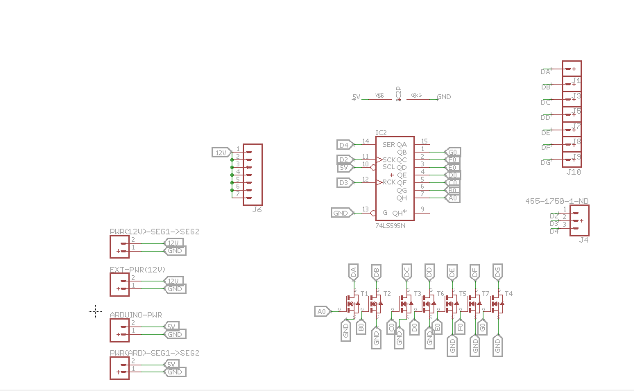
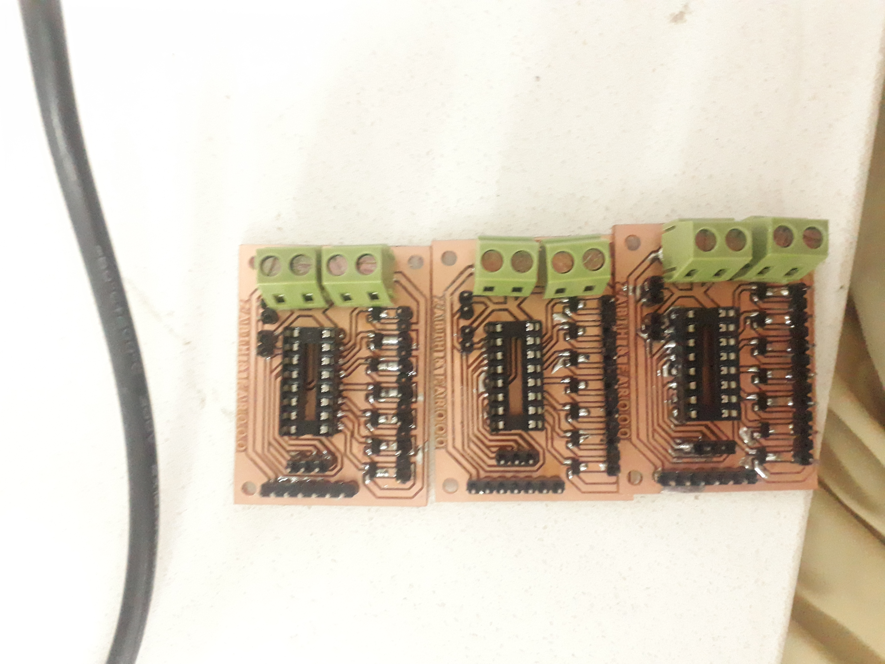
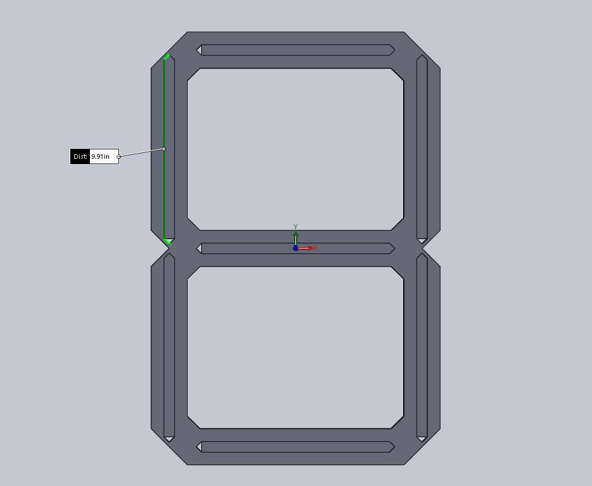
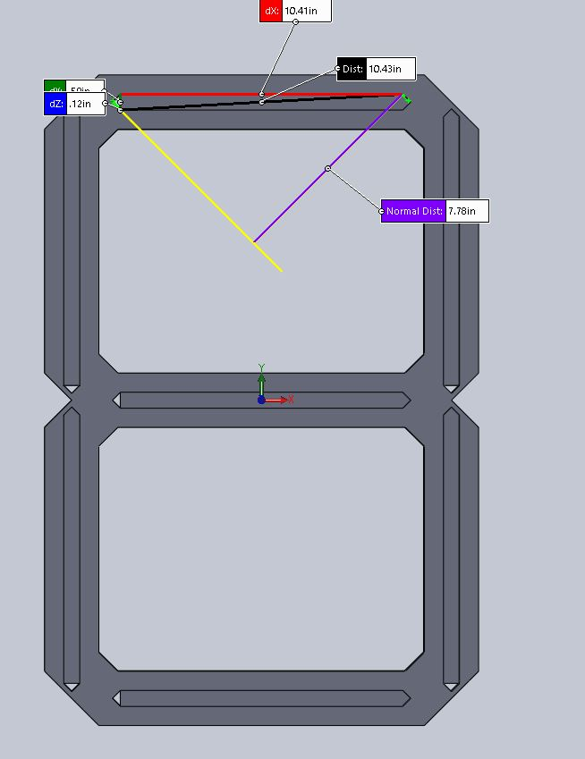
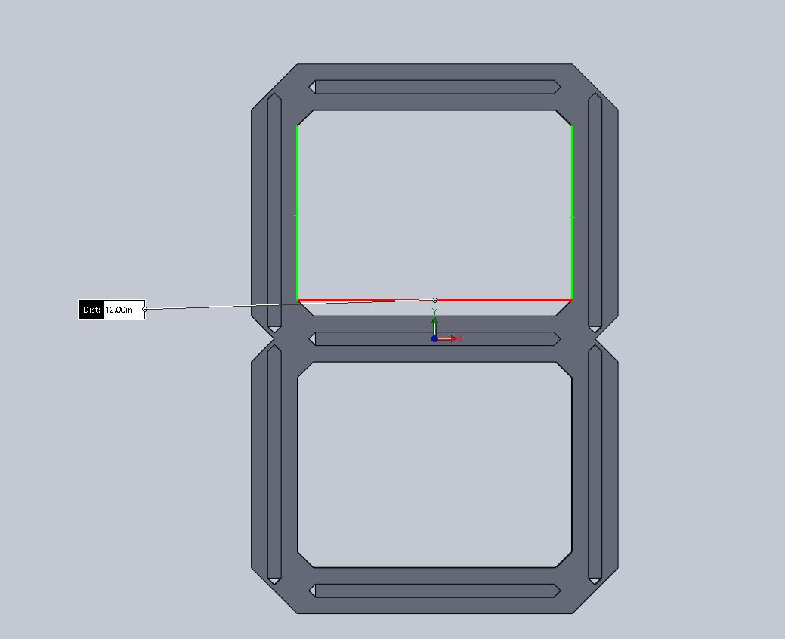
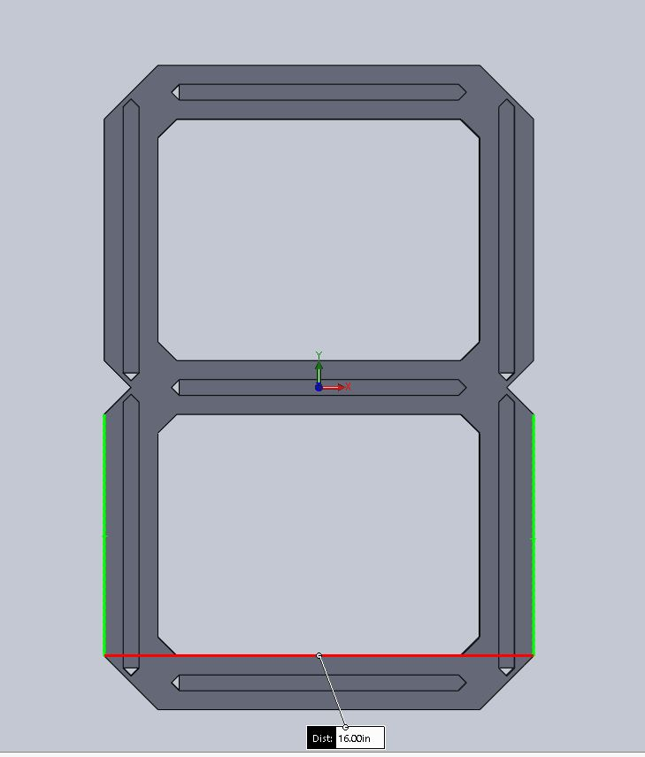
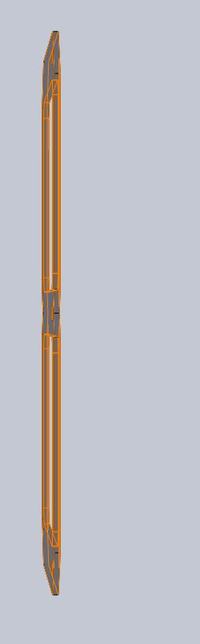
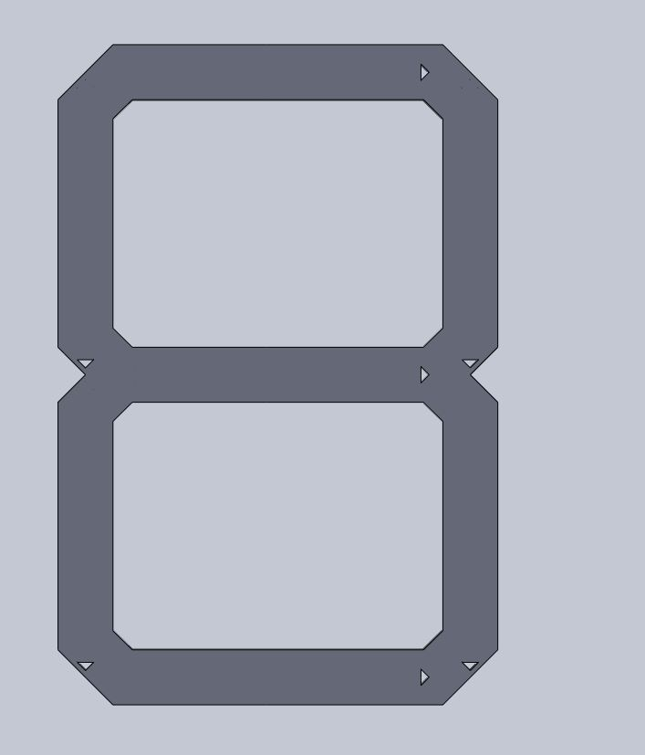

Syed Farooq Hassnain Hashmi
Zabih Ullah
Supervised by: Dr. Muhammad Asim
Introduction
At this time most people in the whole world use an automated digital clock in their everyday
use. Starting from the hand watch we were to those huge street clocks every one of us are
dependent on the display the make.
At this time most people in the whole world use automated digital clocks in their everyday
use. The digital clock shows time in digit form. This is an automation based clock. It comprises of both hardware and software work. The variations and changings of time are controlled by a programmed microcontroller, here we’ve used ATmega328P. Microcontroller is the core unit of system. All processes in the system are carried and coordinated by it. Shift-Registers(74HC595), MOSFETS, capacitors and resistors are also used in main circuitry of the project to provide smooth and acuurate power supply to the clock.
The circuit is shown in the page using eagle and the code has been written using Arduino.
Our Idea

High Level Design
If the project is implemented on high level and most advanced AI technology then the working procedure would be alike as shown below;
Project Execution Plan
This section describes how the work in project is carried out and executed. It shows the step by step execution and flow of work progress. It depicts the work done in project.The execution plan includes:
- Literature review
- Component selection
- Prototype
- Large 7-Segment design
- Assembly and final product
Major Electronic Components Requeired
Atmega 328p
The purpose of the Atmega 328p (Microcontroller) is to control the whole functioning of the display with the aid of 74HC595. In this project 12 Digital pins of Microcontroller has been used:

74HC595D
This device contains an 8-bit serial-in, parallel-out shift register that feeds an 8-bit D-type storage register. The storage register has 8 3-STATE outputs. Separate clocks are provided for both the shift register and the storage register. The shift register has a direct-overriding clear, serial input, and serial output (standard) pins for cascading. The purpose of shift register in this project is to the counting flow of the display.
NDS355AN
We have used NDS355AN for switching purpose. The LED Strips that we have used are derived by 12 Volts but we know that the output voltage IC's provide is approximately 3.3 to 5 Volts. So, We have used 12 Volts extra Source connected to LED strips which is connected to the output of the IC through MOSFET
.jpg)
LED Strips
An LED strip light is a flexible circuit board populated by surface mounted light-emitting diodes (SMD LEDs) and other components that usually comes with an adhesive backing. We have used LED Strips to have a very unique and visionable display
Hardware Model
We have used Acrylic sheets of 6mm thickness to make the body of the digits. Which will be cutted in form of digits using Laser cutting technology.
Connectivity To Components
In this project we are connecting components by using SPI (Serial Peripheral Interface) which uses the concept of master and slave. We are using 4 ICs in our project which are directly connected to Micro-controller. Micro-controller feeds every IC individually.
Deligation of Tasks
| Syed Farooq Hussnain | Literature Review |
|---|---|
| Hardware Design | |
| Circuit implementation | |
| Assembling Hardware Components | |
| Tasks related to Solid Works | |
| Zabih Ullah | Literature Review |
| Components Selection | |
| Interfacing Hardware to Software | |
| Coding | |
| Troubleshoot hardware implemented Circuit | |
| Documentation |
Ethical Considerations
This project involves no harm to any person or organization. Also, it doesn’t possess any copy-right violations. Its made and modelled wholly and solely for learning purpose. Its design, work procedure resemblance to any other’s work may only be coincidence. Moreover, the engineer code of ethic are also followed. The references, from where content or help is taken, are properly citated in the project report.
Commercialization Aspects
At this time most peoples in the whole world use an automated digital clock in their everyday use. Starting from the hand watch we were to those huge street clocks every one of us are dependent on the display the make.
The clock we’ve designed is very simple and of basic level. The market is already filled up with most advanced digital clocks. But, this project can be modified to high level design to get market value. The addition of Artificial Intelligence i.e. use of touch sensors, wireless time setting options and power supply by solar or other inexpensive sources which may work for years continuously will create huge market value to this product. These will make the product stable and valuable economically.
Design
The designing of this project includes four basic steps. The four steps are i. Prototyping, PCB schematic, software development and CAD Designing. The four steps are explained below:
Electrical Schematic
PCB Schematic:
- Pin:1: Segment G of 7-segment through MOSFET
- Pin:2: Segment F of 7-segment through MOSFET
- Pin:3: Segment E of 7-segment through MOSFET
- Pin:4: Segment D of 7-segment through MOSFET
- Pin:5: Segment C of 7-segment through MOSFET
- Pin:6: Segment B of 7-segment through MOSFET
- Pin:7: Segment A of 7-segment through MOSFET
- Pin:8: Ground
- Pin:9: Not Used
- Pin:10: +5V(Vcc)
- Pin:11: D2 (Micro-Controller)
- Pin:12: D3 (Micro-Controller)
- Pin:13: Ground
- Pin:14: D4 (Micro-Controller)
- Pin:15: Not Used
- Pin:16: +5V(Vcc)
- Gate: Cnnection with IC required Segment
- Drain: -ve terminal of the Segment
- Source: Ground
Software Development
Design of Finished Product
- https://pdf1.alldatasheet.com/datasheet-pdf/view/636901/ONSEMI/74HC595.html
- http://fab.cba.mit.edu/classes/863.06/11.13/NDS355AN.pdf
- http://fab.cba.mit.edu/classes/863.06/11.13/NDS355AN.pdf
Prototyping
Firstly, we implemented its prototype on bread board. On bread board we analyzed the working process of Digital Clock. Checked how the hardware connections can be made smoothly and efficiently. Prototyping helped us in make the hardware connections simpler and easier. The pictorial description of this step is attached below:The second step of designing is PCB schematic of the project. The schematic is made on software named as eagle. In eagle software, PCB layouts of the hardware connections are made. In this project, we’ve made four PCB layouts as per requirements of our project. The pictorial description of this step is attached below:
7 segment driver Schematic
Micro-Controller Schematic

The electrical schematic shows connection of 74HC595 (Shift-Register) with 355AN N-channel MOSFET and Microcontroller. Description of connections is given as follows:

Discription of the Schematic:
74HC595 connections
355AN N-channel MOSFET connections

The Microcontroller continuously sends data to the Shift Register. The algorithm processes the data and displays the data in correct order which is recived by the Shift Register and it is forwarded to 7-segment display.
PCB Layout
Considering the above Schematic we had designed Printed Circuit Board.PCB milling
Eagle Layout

PCB Milled
PCB Components attached
Micro-Controller PCB layout

PCB Milled
PCB Components attached
In first steps we designed a 7 segment driver circuit by using ATmega328p and 74hc595. Our task was quite simple when it was upto manufactured 7 segment display but we faced a lot of problems when it came to control our own 7 segment display which was made by our 12V LED strips.
Challenges faced in routing and tackling those challenges
It was quite difficult to design the PCB layout of this project because projct required large number of MOSFETS, four ICs and a Microcontroller. So taking the decision took lot of time because arrangement of those all components on single IC was not easy, hence we decided to make PCB layout of each digit individually and a seperate micro-controller.
The programming part of project is done in this step. The program is written in Arduino software and burned into the Microcontroller namely ATmega328P. This was one of the most crucial stages of our project designing. For this first we’d to learn Arduino programming basics and working principles. In this stage, we tackled many programming issues. This was the most time consuming stage of the project. After a lot of troubleshooting, finally, we copped up with programming issues.

Prcedure adopted to Burn Bootloader
To burn bootloader in Micro-controller is another challenging task. So,initially we got failed in burning bootloader. It was probably due to continuitity problems on the PCB. After careful trace by trace troubleshooting of the board, we got our issue resolved
In CAD designing, our aim was to make this clock attractive, and aesthetically appealing. For CAD design, we’ve used acrylic sheets, High quality LED strips. The cutting of the sheets were done in FAB Lab (Khairpur) using Laser Cutting Technology. Initially all parts were dissembled and separate, we had assembled and joined them elegantly with the help of notches. The pictorial description of this step is attached below:
Idea

Conveting idea to a final Solid works design
|  |  |
|  |  |
|  |  |
 |
Solid works complete machinable files
Diffusers
Design of the final product without assembly

Design of the final product with assembly

Results
We’ve made a videos of the final product with successful implementation and results. The videos are uploaded on YouTube whose links are given below. In this video one can see how this clock is working.Click on the link to watch Fully functional Digital Clock
References
Conclusions
It is an embedded systems project which includes both hardware and software work. In this project we learnt how difficult is the practical implementation of theoretical concepts. It’s very complicated and quite problematic to interface software with hardware modules. For example, there’s huge difference in theoretical study of Mosfets’ switching and their practical implementation. It’s very hard to encounter and simplify the project in terms of wiring and connections. The most confusing part is trouble shooting of hardware components. If any failure happens, one has to check each and every component to know which components is not functioning properly. Also, the error detection part of this project is the most time consuming part due to its complex hardware circuitry.
To execute this project we started with thorough review of literature and we did our research to finalize component selection. It was very tough task to select appropriate components for project because components have all control of the system. One has to think upon each angle of the project i.e. implementation efficacy and cost effectiveness of project etc. PCB layout, hardware connection and power supply have their own importance. In short, one has to take decisions very wisely and precisely, in each aspect of project, to have good and efficient Digital Clock. The pictorial description of Microcontroller Boot loading is attached below:
Please include ample pictures to be as illustrative and descriptive as possible with various issues you came across and how you got around them.
Appendix
The bill of material along with number of components is given below:Bill of Materials
| Item | Quantity | Price in Rupees |
|---|---|---|
| Atmega 328p | 1 | 340 |
| 74HC595 | 4 | 100 |
| 355AN | 28 | 850 |
| Acrylic Sheet (24" x 16") | 4 | 3500 |
| LED strips | 10 meter | 1200 |
| Resistors(0 ohm) | 2 | 2 |
| Resistor (10Kohm) | 1 | 1 |
| Resistor (499 ohm) | 2 | 2 |
| 5V power LED | 1 | 15 |
| V REG LM1117 SOT223 | 1 | 45 |
| Capacitor(10uf) | 3 | 30 |
| Capacitor(22pf) | 2 | 20 |
| Capacitor(0.1uf) | 1 | 10 |
| Crystall Oscillator(16MHz) | 1 | 10 |
| Report Submitted on Time | ....................... |
| Matlab Profeciency | ....................... |